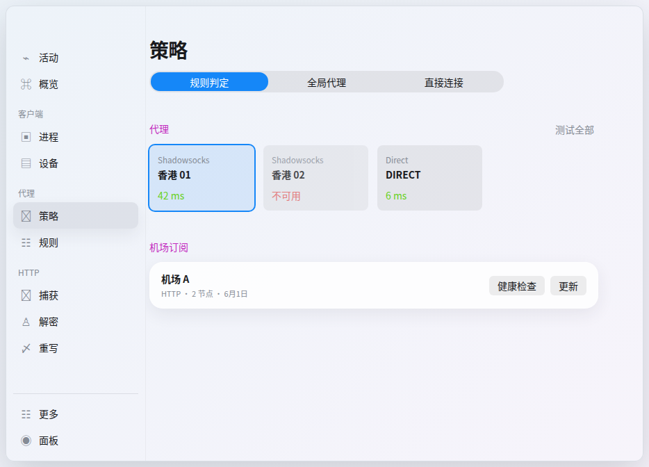
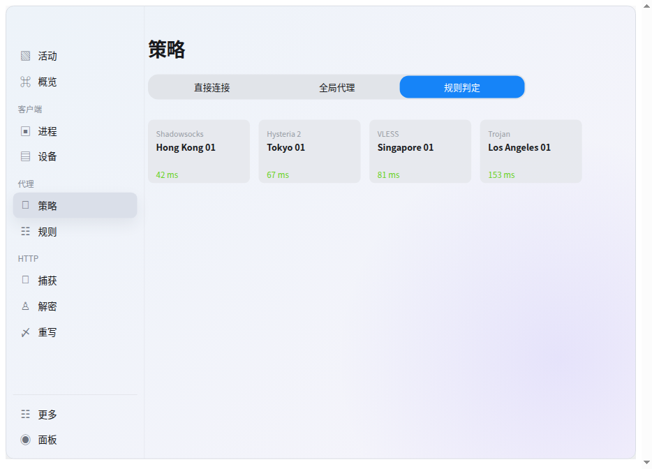
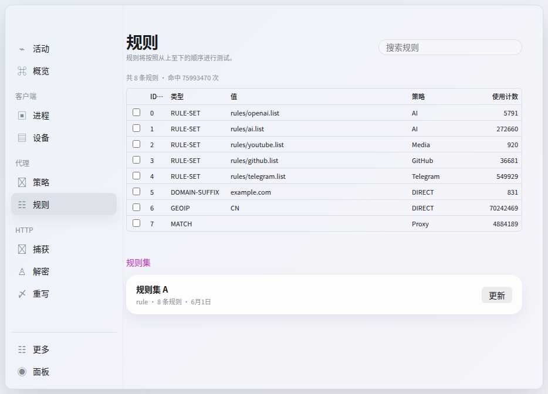
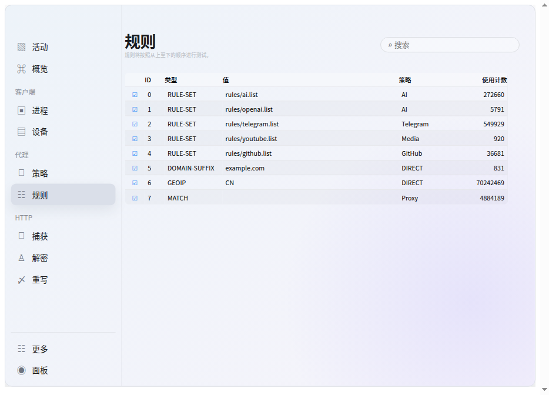

Phase 4 delivery: policies mode selector + proxy health-check grid + proxy/rule provider lists, all backed by mocks in the renderer over the gateway/IPC bridge. Left: production build with live mock data. Right: owner-approved reference (auto-scaled by fitWindow() to fit its stage). Both captured at a 934×672 content viewport under Xvfb + Electron.




extra.hitCount, independent of size (rule-set/GEOIP/MATCH rows report size: -1 yet render large counts like 272660 / 70242469 / 4884189)| Property | impl (raw px) | authoritative CSS | ref (scaled) | status |
|---|---|---|---|---|
| proxy grid tracks | repeat(4,151px), gap 13px | repeat(4,151px), gap 13px | 146 / 12.6 | match CSS |
| proxy card size | 151 × 94 | 151 × 94 (height 94px) | 146 × 90.9 | match CSS |
| rules-table width | 673 (frame 675) | 675 | 652.6 | −2px (border) |
| column widths (check/id/type/policy/hits) | 34 / 35 / 102 / 118 / 75 | 34 / 35 / 102 / 118 / 75 | 32.9 / 33.8 / 98.6 / 114.1 / 72.5 | match CSS |
| payload column | flexible (309) | flexible | 299.7 | match CSS |
| rule row height | 27 | 27 (td 26 + border) | 25.1 | +1px |
| rule row count | 8 | 8 | 8 | match |
The reference renders through fitWindow() which applies transform: scale(stageWidth/934) (~0.967 here), so its raw px (146/12.6/90.9) are uniformly scaled. The impl matches the declared authoritative CSS exactly: track 151px, gap 13px, card 151×94, table columns 34/35/102/(flex)/118/75. The reference table width/row-height figures differ only by the 1px border rounding.
| Route | Facts | Geometry |
|---|---|---|
#/policies |
title 策略; modes 规则判定/全局代理/直接连接; 3 proxy cards (香港 01 42 ms, 香港 02 超时 (unavailable), DIRECT 6 ms); 1 provider 机场 A; error state = false | grid x=215 y=209 w=695 h=94; 3 cards 151×94, gap dx=13; no page horizontal overflow |
#/rules |
title 规则; header 共 8 条规则 · 命中 75993470 次; 8 rows; columns "", ID↑, 类型, 值, 策略, 使用计数; 1 provider 规则集 A; error state = false | table x=216 y=151 w=673 (frame 675) h=243; cols 34/35/102/flex(309)/118/75 = 673; rows 27px; no page horizontal overflow |
Hits derivation: the 使用计数 column is sourced from extra.hitCount (per-rule usage count), never from size. Rule-set/GEOIP/MATCH rows report size: -1 yet still render their large hit counts (272660 / 70242469 / 4884189), which is exactly the P1 fix that previously showed the small size value instead.